贡献到画廊-Contributing to the Gallery
Have you created an Orchard module or theme that you want to share with other Orchard users? The Orchard Gallery makes this easy, and you can always update and manage your contributions to the gallery as you have new versions to share, or when you want to make changes to existing contributions.
您是否创建了要与其他Orchard用户共享的Orchard模块或主题？ [Orchard Gallery]（http://gallery.orchardproject.net/）使这一过程变得简单，您可以随时更新和管理您对图库的贡献，因为您要分享新版本，或者想要对现有版本进行更改贡献。
To get started, click on the Contribute tab of the gallery site.
要开始使用，请单击图库站点的 Contribute 选项卡。
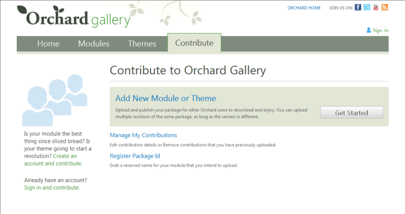
Creating a User Account
创建用户帐户
To submit a module or theme to the gallery, you must first create a user account on the gallery. Click the Sign In link in the header area of the site to get to the Log On page. In the sidebar for the site, click the link to Register Now.
要向库中提交模块或主题，您必须先在库中创建用户帐户。单击站点标题区域中的登录链接以转到登录页面。在网站的侧边栏中，单击立即注册的链接。
On the account registration page, specify your account details.
在帐户注册页面上，指定您的帐户详细信息。
Upon submitting this form, you will receive a notification that email has been sent to you.
提交此表单后，您将收到一封已发送给您的电子邮件通知。
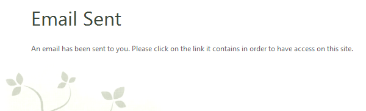
Click the verification link in the email in order to activate your account.
点击电子邮件中的验证链接即可激活您的帐户。
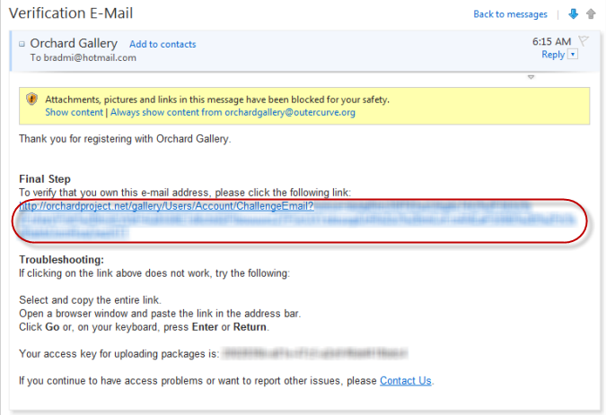
This will return you to the web site, where you can now sign in.
这将返回您现在可以登录的网站。
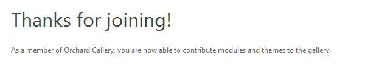
Submitting a Package to the Gallery
将包提交到图库
A package is just a zipped up file (in .nupkg format) containing your module or theme, and it is easy to create a package using the orchard command-line utility. For instructions on how to create a package, refer to these topics:
包只是一个包含模块或主题的压缩文件（[.nupkg]（http://nuget.org）格式），使用orchard命令行实用程序很容易创建包。有关如何创建包的说明，请参阅以下主题：
-
[打包和共享模块]（打包和共享模块） *
-
[包装和分享主题]（包装和分享主题） *
Once you have packaged your module or theme, visit the Contribute page on the gallery site and click the Add a New Module or Theme link.
打包模块或主题后，请访问库网站上的 Contribute 页面，然后单击添加新模块或主题链接。
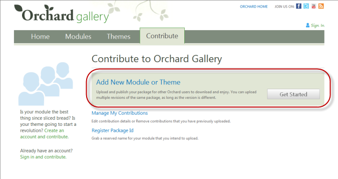
Uploading a package is done in three simple steps:
上传包是通过三个简单的步骤完成的：
- Upload a package file (or specify a remote URL to the package file)
1.上传包文件（或指定包文件的远程URL）
- Enter the details about your package (description, tags, license, etc)
2.输入有关包裹的详细信息（描述，标签，许可证等）
- Specify an optional logo and/or screenshots.
3.指定可选徽标和/或屏幕截图。
Specifying a Package File
指定包文件
In the first step, you will be asked to specify a package file, either by uploading from your local computer or by a specifying a URL.
在第一步中，系统会要求您指定包文件，方法是从本地计算机上传或指定URL。
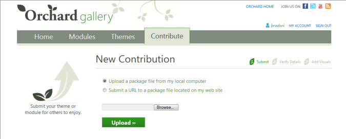
To upload a package file, browse for a .nupkg file on your local computer that you created using the Orchard command-line utility. You can also specify a URL to a package file if you have published it elsewhere. For example, if you have released your package on a CodePlex.com site, you could specify the URL to your release.
要上载程序包文件，请在本地计算机上浏览使用Orchard命令行实用程序创建的.nupkg文件。如果已将其发布到其他位置，还可以指定包文件的URL。例如，如果您已在[CodePlex.com]（http://codeplex.com）站点上发布了包，则可以指定发布的URL。
-
Example URL: http://orchardmaps.codeplex.com/Project/Download/FileDownload.aspx?DownloadId=187223
-
示例网址：[http://orchardmaps.codeplex.com/Project/Download/FileDownload.aspx?DownloadId=187223 ](http://orchardmaps.codeplex.com/Project/Download/FileDownload.aspx?DownloadId=187223） *
In this walkthrough, we will assume you are browsing for the package on your local computer. Click the Browse button to find the .nupkg file.
在本演练中，我们假设您正在浏览本地计算机上的软件包。单击 Browse 按钮以查找.nupkg文件。
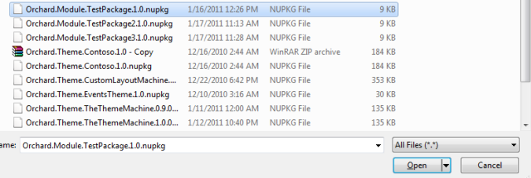
Specifying the Package Details
指定包详细信息
Once you upload your package, click Next and you will be presented with a form for specifying the details of your package. One of the advantages of using the .nupkg format is that the gallery can automatically extract many details about your package from the file itself. These details are determined by the Module.txt or Theme.txt file in your module or theme.
上传包后，单击下一步，您将看到一个表单，用于指定包的详细信息。使用.nupkg格式的一个优点是，库可以从文件本身自动提取有关包的许多详细信息。这些详细信息由模块或主题中的Module.txt或Theme.txt文件确定。
Many of the fields on this form are optional, but allow you to specify tags, license information, a project web site, and other information that will help visitors of the gallery to find and learn more about your package.
此表单上的许多字段都是可选的，但允许您指定标签，许可证信息，项目网站以及其他信息，以帮助图库的访问者查找和了解有关您的包的更多信息。
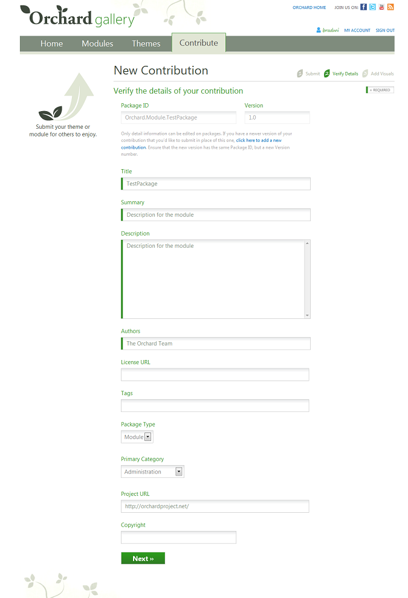
There are a couple key fields worth calling out:
有几个值得称呼的关键字段：
-
Package ID is the unique name for your package. It is obtained from the package when you upload it, and if you are the first person to submit a package with this ID, you will given exclusive ownership for that ID. While you can upload additional versions of packages sharing this ID, no other submitter will be able to use this ID for their package uploads unless you grant explicit owner rights to that user. It is also possible to register a package ID in advance of uploading your module, to be sure you can claim the name that you want.
-
包ID 是包的唯一名称。它是在您上传时从包中获取的，如果您是第一个提交具有此ID的包的人，您将获得该ID的独占所有权。虽然您可以上传共享此ID的其他版本的软件包，但除非您向该用户授予显式所有者权限，否则其他任何提交者都无法使用此ID进行其软件包上载。也可以在上传模块之前注册包ID，以确保您可以声明所需的名称。
-
Package Version is a version number for the package, and must be unique among all other packages in the gallery that same the same package ID. Every time you submit a package to the gallery, you will need to increment the version number for your package. This allows users of your package to know when a new version is available.
-
包版本是包的版本号，并且必须在库中具有相同包ID的所有其他包中是唯一的。每次向图库提交包时，都需要增加包的版本号。这允许您的包的用户知道新版本何时可用。
-
Package Type is what determines whether your package will appear on the Modules or Themes tab of the gallery site. Be sure to pick the right type for your package!
-
包装类型决定您的包装是否会出现在图库网站的模块或主题标签上。一定要为您的包装选择合适的类型！
Specifying a Logo and Screenshots
指定徽标和屏幕截图
In the final step of the submission process, you can specify a custom logo image and zero or more screenshot images, which users will be able to see on the details page for your package. Both of these are optional, so feel free to skip this step, if you prefer not to customize the default images.
在提交过程的最后一步，您可以指定自定义徽标图像和零个或多个屏幕截图图像，用户可以在包的详细信息页面上看到这些图像。这两个都是可选的，如果您不想自定义默认图像，请随意跳过此步骤。
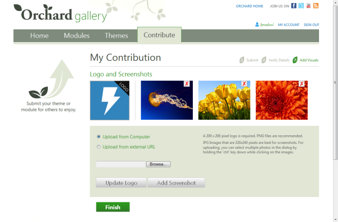
When you finish the submission, you will be notified that your package will appear on the gallery shortly. Normally, your package will appear on the site in 60 seconds or less.
完成提交后，系统会通知您，您的包将很快显示在图库中。通常，您的包裹将在60秒或更短时间内显示在网站上。
Managing your Contributions to the Gallery
管理您对图库的贡献
Once your package appears on the web site, you will notice that you can perform additional tasks for this package when you are logged in:
一旦您的软件包出现在网站上，您将注意到您可以在登录时执行此软件包的其他任务：
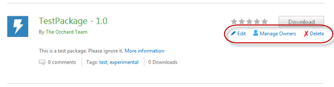
-
Edit allows you to return to the package details form and update information about your package.
-
编辑允许您返回包详细信息表单并更新有关您的包的信息。
-
Manage Owners allows you to assign additional owners for your package.
-
管理所有者允许您为包裹分配其他所有者。
-
Delete allows you to delete a submission from the gallery. Note: When you delete a submission, you will lose the download count history for that package version.
-
删除允许您从图库中删除提交。注意：删除提交时，将丢失该软件包版本的下载计数历史记录。
To see all of the packages that you previously uploaded to the gallery, visit the Contribute tab and click the Manage My Contributions link.
要查看您之前上传到图库的所有软件包，请访问 Contribute 标签，然后单击 Manage My Contributions 链接。
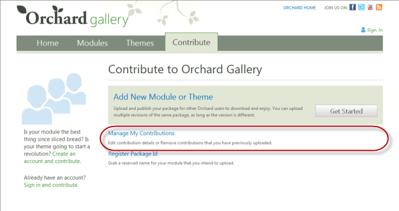
Assigning Additional Owners to a Package
为包分配其他所有者
By default, you will be the only owner for packages that you contribute, and only you can edit, delete, or manage owners for the package. However, by assigning additional owners, you can grant permissions to other users of the gallery to perform these operations on your package too.
默认情况下，您将是您贡献的软件包的唯一所有者，只有您可以编辑，删除或管理软件包的所有者。但是，通过分配其他所有者，您可以向库的其他用户授予权限，以便在您的包上执行这些操作。
Be careful that you trust users you grant ownership rights, as they will be able to perform all of the same operations on the package that you can perform, including deleting your package from the gallery. Also, anyone with ownership rights to your package can upload additional versions of this package to the gallery.
请注意，您信任授予所有权的用户，因为他们将能够对您可以执行的包执行所有相同的操作，包括从库中删除您的包。此外，拥有您的软件包所有权的任何人都可以将此软件包的其他版本上载到库中。
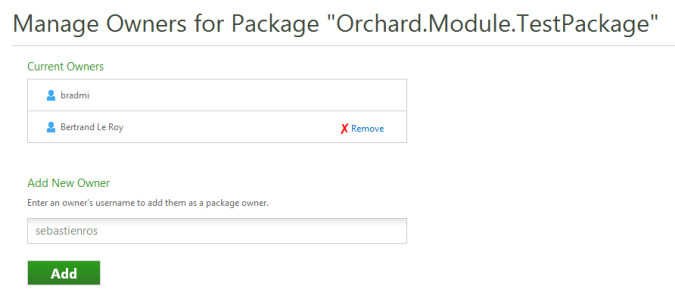
Registering a Package ID in Advance
提前注册包ID
You may want to register a package ID ahead of time, because you want to claim the name of an idea, before you've implemented your module or theme. You can do this from the Contribute tab of the site.
您可能希望提前注册包ID，因为您希望在实现模块或主题之前声明创意的名称。您可以从站点的 Contribute 选项卡执行此操作。
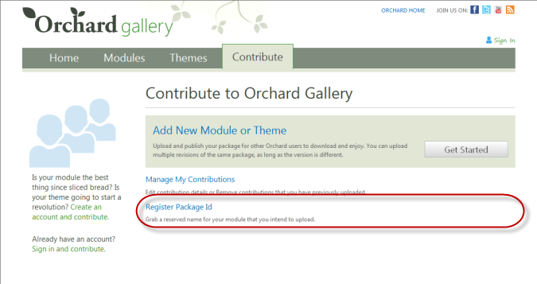
It is a known issue that you cannot see the packages that you have previously claimed. This will be fixed in a future update to the gallery site.
这是一个众所周知的问题，您无法看到之前声明的软件包。这将在未来对画廊网站的更新中修复。
Managing Your Account
管理您的帐户
The My Account link allows you to manage your gallery account.
我的帐户链接可让您管理您的图库帐户。
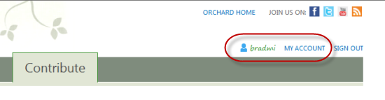
You can view your account key and reset your password from here. You account key is used when using the NuGet.org command-line utility to upload a package to the gallery feed.
您可以在此处查看您的帐户密钥并重置密码。使用[NuGet.org]（NuGet.org）命令行实用程序将包上传到图库供稿时，将使用您的帐户密钥。
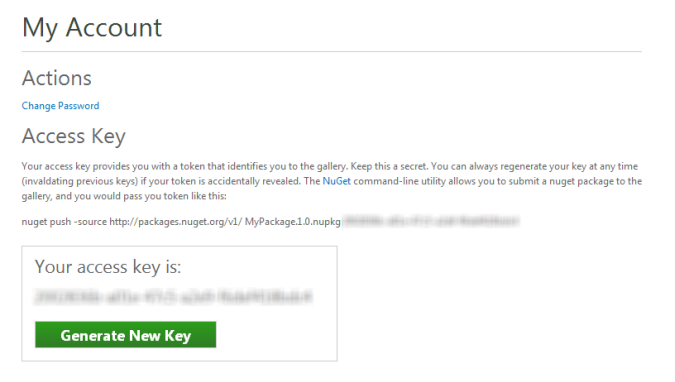